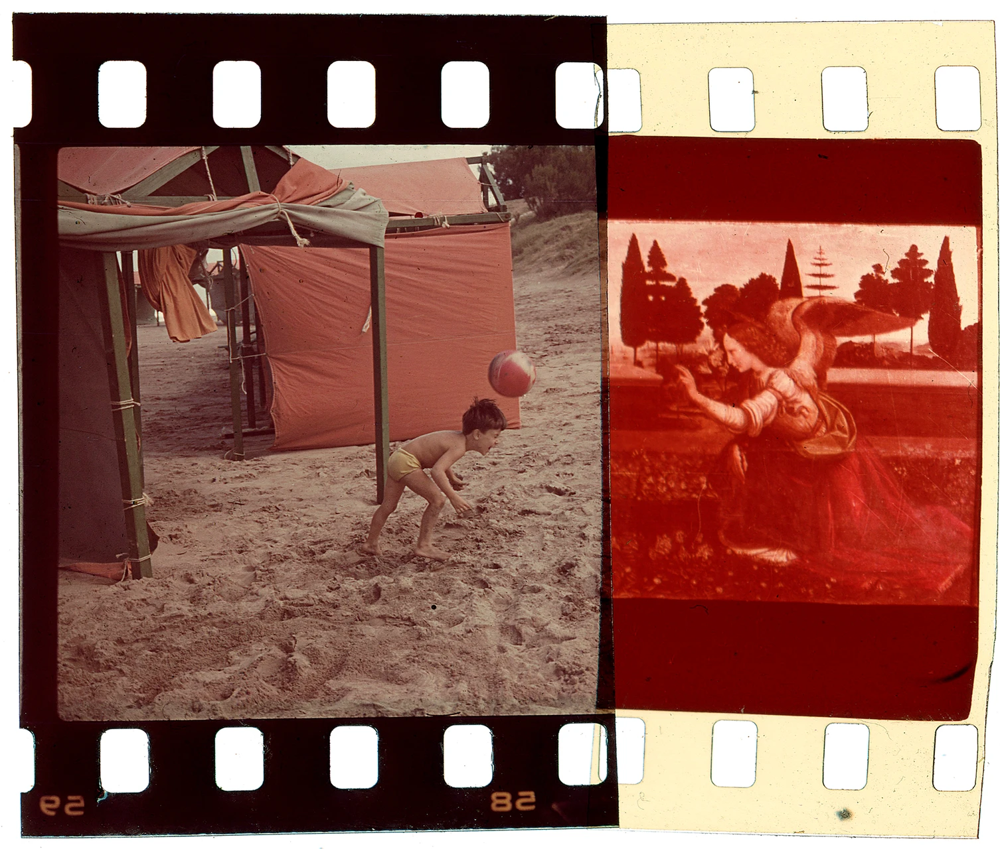
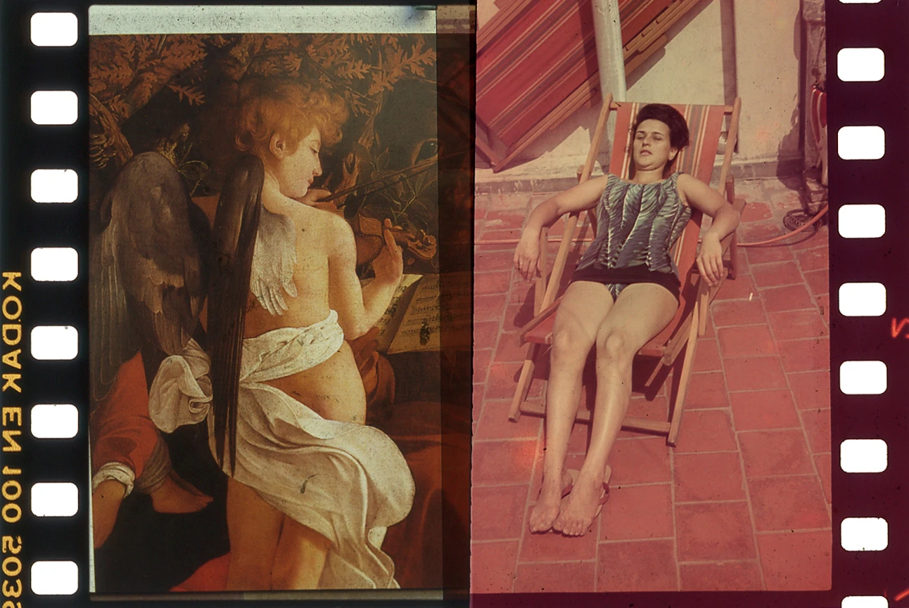
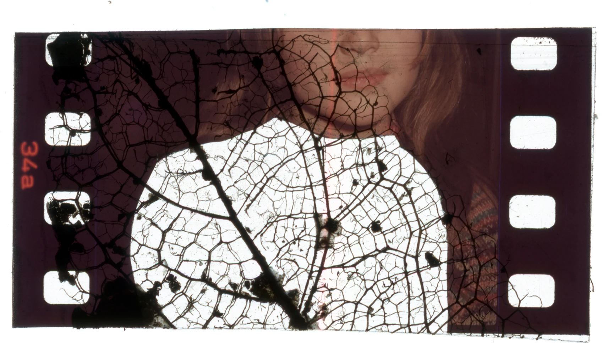
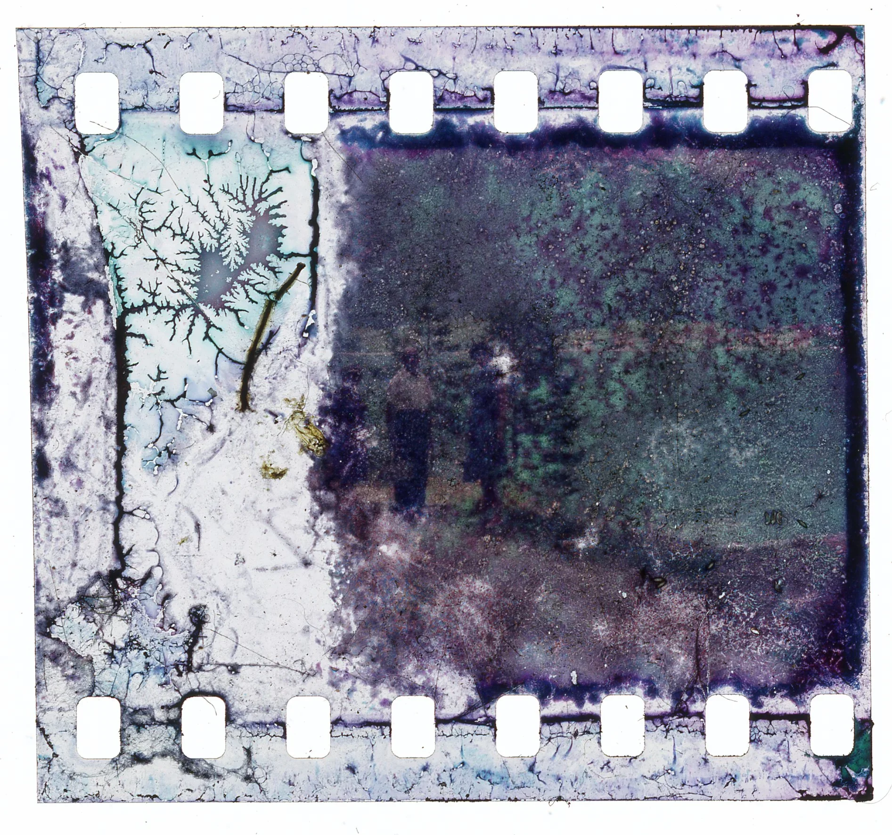
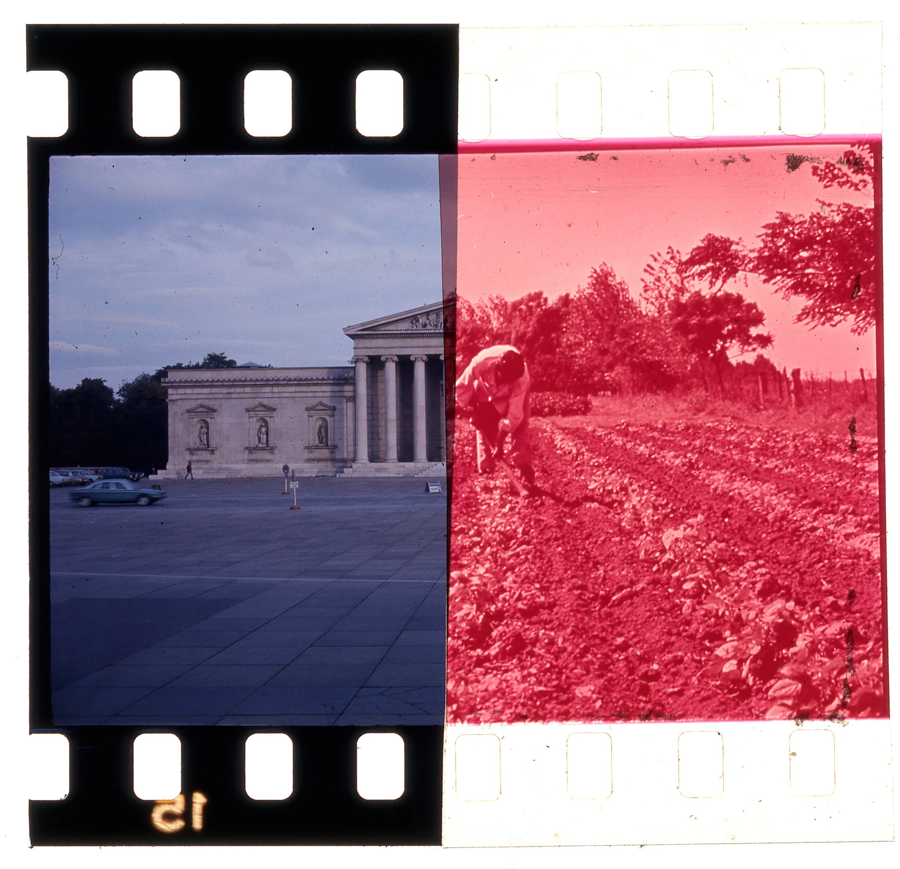
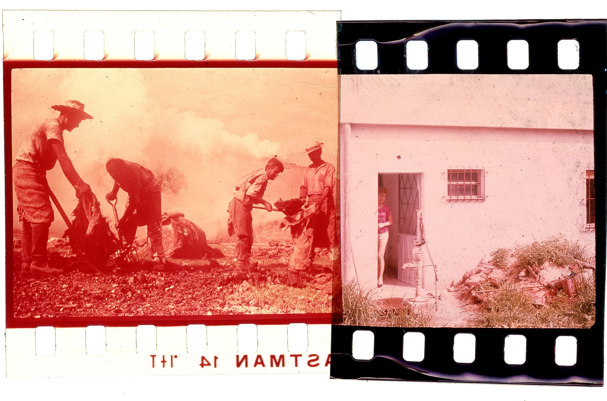

Annunciation Details
Annunciation Details
Annunciation Details
Annunciation Details
 Buttler Make the House Bigger
Buttler Make the House Bigger

Gamers Holy Mother and Lamb
Holy Mother and Lamb
 Il Pantheon del Colosseo
Il Pantheon del Colosseo
 Just Calm, or Not
Just Calm, or Not
 Maquina de Luz #5
Maquina de Luz #5
 Maquina de Luz #12
Maquina de Luz #12

Pleasure Point of View
Point of View

Selfportrait
They Could Be Gardeners
The Gardener of the Noncoliseum This Lake Was Created on a Slide
This Lake Was Created on a Slide

Workers